FUNCTION OF COMPONENTS
The intelligent clearance sonar system consists of the following components:
| Component | Function |
|---|---|
| Clearance Warning ECU Assembly |
|
| Steering Pad Switch Assembly - Multi-information Switch |
Enables, disables or cuts off the operation of the intelligent clearance sonar system by transmitting the switch operation signal to the meter circuit plate. |
| ECM | Sends the engine speed signal to the clearance warning ECU assembly via CAN communication. |
| Hybrid Vehicle Control ECU |
|
| Meter Circuit Plate - Multi-information Display - ICS OFF Indicator - Meter buzzer |
|
| Combination Meter Mirror ECU* | Displays the control status of the intelligent clearance sonar system based on the signals received from the clearance warning ECU assembly via CAN communication. |
| Stop Light Switch Assembly | Detects if the brake pedal is depressed and outputs a signal to the skid control ECU. |
| Skid Control ECU |
|
| Steering Sensor | Sends the steering angle signal to the clearance warning ECU assembly via CAN communication. |
| Airbag ECU Assembly | Sends the yaw rate and acceleration sensor (airbag ECU assembly) signal to the clearance warning ECU assembly via CAN communication. |
|
Sends the wheel speed signals to the skid control ECU. |
|
Sends the shift state signal to the hybrid vehicle control ECU. |
|
Detects the distance between the vehicle and an obstacle. |
|
Sounds upon receiving signals from the Clearance Warning ECU Assembly. |
| Accelerator Pedal Sensor Assembly | Sends the accelerator pedal opening angle signal to the hybrid vehicle control ECU. |
| Main Body ECU (Multiplex Network Body ECU) | Sends the driver seat belt signal to the clearance warning ECU assembly. |
| Air Conditioning Amplifier Assembly | Sends the ambient temperature signal to the clearance warning ECU assembly. |
*: w/ Headup Display System
OPERATION CONDITIONS (Intelligent Clearance Sonar System)
Driving torque restriction control
Initiation Condition (When all of the following conditions are met, the driving torque restriction control is performed.)
The intelligent clearance sonar system is turned on.
An obstruction is detected by an ultrasonic sensor.
The vehicle speed is 15 km/h (9 mph) or less.
Collision is avoidable if emergency braking is performed by the driver.
Cancellation Condition (When any of the following conditions are met, driving torque restriction control is cancelled.)
The intelligent clearance sonar system is turned off.
No obstruction is detected by the ultrasonic sensors.
A possible collision is avoided.
Brake Control
Initiation Condition (When all of the following conditions are met, brake control is performed.)
Driving torque restriction control is performed.
A collision is likely even if emergency braking is performed by the driver.
Cancellation Condition (When any of the following conditions are met, driving torque restriction control is cancelled.)
The intelligent clearance sonar system is turned off.
The brake pedal is depressed after the vehicle is stopped by brake control.
Approximately 2 seconds have elapsed since the vehicle was stopped by brake control.
No obstruction is detected by the ultrasonic sensors.
Others
When brake control is performed, the intelligent clearance sonar system turns off automatically. The intelligent clearance sonar system turns on again when no obstructions are detected by the ultrasonic sensors, the shift lever is moved to reverse (R) with drive (D) selected or is moved to drive (D) with reverse (R) selected, the engine switch is turned off and then turned on (IG), or by using settings screen on the multi-information display.
Figure 1. Intelligent clearance sonar system operation
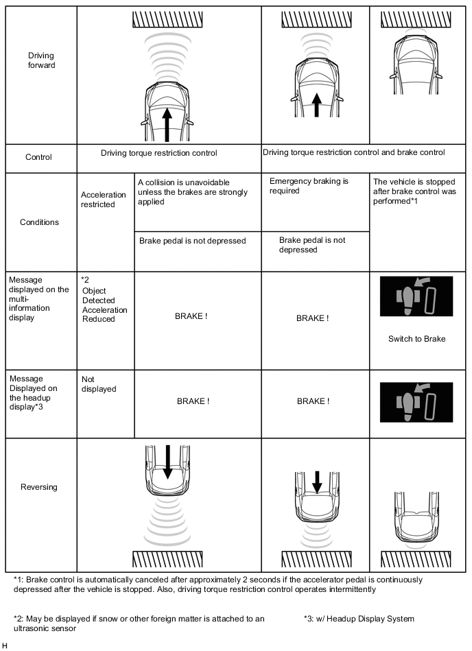
CASES OF UNNECESSARY INTELLIGENT CLEARANCE SONAR SYSTEM OPERATION
In the following situations, the intelligent clearance sonar system may operate even when there is no possibility of a collision:
Environmental influence
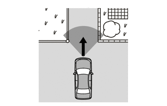
There is an obstacle on the shoulder of the road (when the vehicle is driven in a narrow tunnel, on a narrow bridge or on a narrow road).
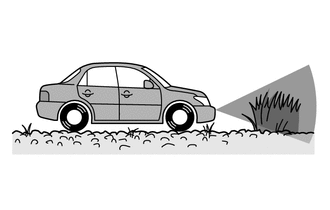
The vehicle is being driven on grass or a gravel road.
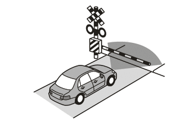
The vehicle is driven toward a banner or flag, a low-hanging branch or a boom barrier (such as those used at railroad crossings, toll gates and parking lots).
Tech Tips
Even if the intelligent clearance sonar system operates while on a railroad crossing, brake control will be automatically be canceled after approximately 2 seconds. Brake control can also be canceled by depressing the brake pedal. After brake control is canceled, depress the accelerator pedal to drive out of the railroad crossing.
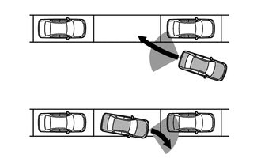
The vehicle is close to other vehicles while being parallel parked.
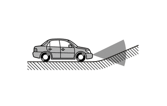
The vehicle is being driven on a steep slope.
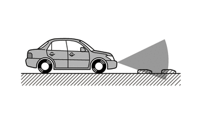
There are objects located lower than the ultrasonic sensors.
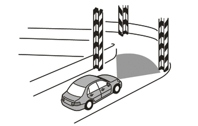
The vehicle is being driven on a narrow road.
There is a rut or hole in the surface of the road.
When the vehicle is driven on a metal cover (grating), such as those used for drainage ditches.
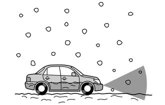
Influence from the weather
In severe weather such as fog, snow or a sandstorm.
Foreign matter such as snow, ice or mud is attached to an ultrasonic sensor. (The system returns to normal when the foreign matter is removed.)
When there is a downpour, or water is splashing on the vehicle.
Water is covering an ultrasonic sensor due to a flooded road.
Influence from other ultrasonic waves
When ultrasonic waves are received from the horn or parking sonar system of another vehicle, a motorcycle engine, or the air brakes of a large vehicle.
Electronic components such as a backlit license plate (especially fluorescent types), fog lights, a fender pole or a wireless antenna are installed near an ultrasonic sensor.
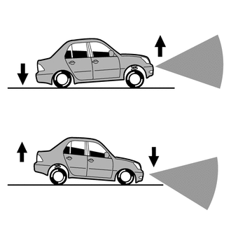
Changes in the vehicle.
The height of the vehicle has drastically changed due to loading (the nose tilts up or down).
The vehicle is significantly tilted.
An ultrasonic sensor is misaligned due to a collision, etc.
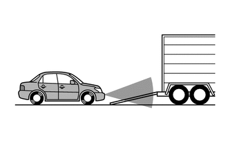
Others
The vehicle is being loaded onto a ship, truck or other transport vessel.
The vehicle is being operated on a drum tester such as a speedometer tester, brake/speedometer combination tester or chassis dynamometer.
When the vehicle is being towed.
MULTI-INFORMATION DISPLAY AND HEADUP DISPLAY (w/ Headup Display System)
Intelligent clearance sonar system display
The intelligent clearance sonar system uses the multi-information display in the meter circuit plate, the combination meter mirror ECU and ICS OFF indicator light to indicate the operation status of the system.
Intelligent clearance sonar system operation status display
When the operation conditions are met, the clearance warning ECU assembly sends display or illumination request signals to the meter circuit plate, combination meter mirror ECU and ICS OFF indicator light. The clearance warning ECU assembly also sends buzzer sound request signals to the meter circuit plate.
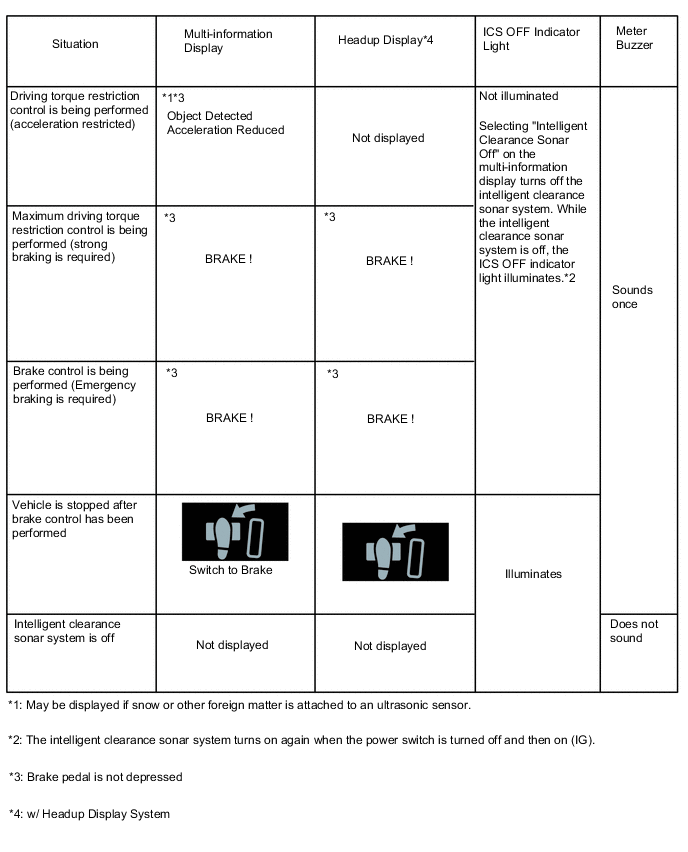
Intelligent clearance sonar system warning display
When operation of the intelligent clearance sonar system is temporarily suspended due to a malfunction or dirty ultrasonic sensor, a message is displayed on the multi-information display in the meter circuit plate, the ICS OFF indicator light blinks and the buzzer sounds.
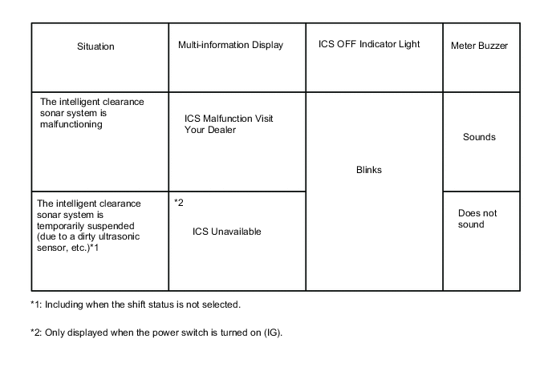
Intelligent clearance sonar system off display
When the intelligent clearance sonar system is off, the ICS OFF indicator light illuminates.
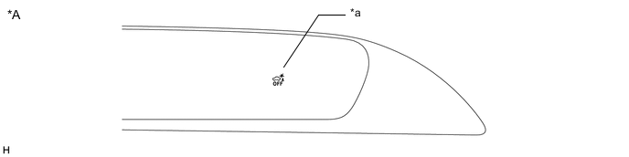
| *A | for LHD | - | - |
| *a | ICS OFF Indicator | - | - |
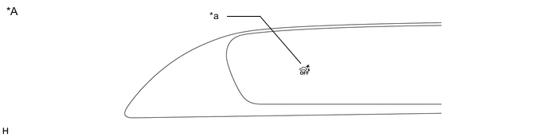
| *A | for RHD | - | - |
| *a | ICS OFF Indicator | - | - |